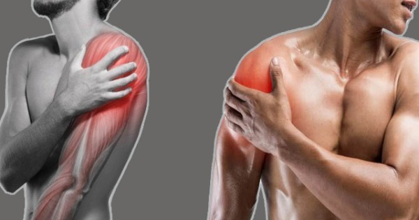
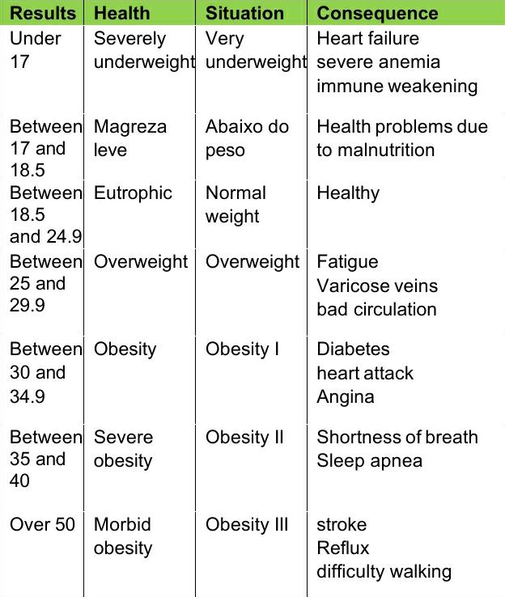

Improves posture;
Increases flexibility;
Relieves muscle tension;
Increases body awareness;
Prevents tendonitis and RSI (repetitive strain injuries);
Activates blood circulation;
Prepares the muscle for physical activity.
GYM
Weight training improves cardiorespiratory conditioning;
Decreases the amount of fat;
Helps you lose weight;
Decreases the risk of diabetes;
It increases the autonomy of the elderly and ensures a greater physical disposition;
Keeping muscles active triggers the production of hormones responsible for burning fat;
By the increase in protein synthesis
The increase in muscle mass is important not only for aesthetics, muscles are responsible for the increase in basal metabolism (calories spent to maintain vital functions), because they require more energy from the body for their maintenance.
HARMS OF STRETCHING AND EXCESSIVE GYM MEMBERSHIP

Excessive stretching, at the gym, among others, can cause muscle pain, joint and muscle fiber problems, apart from the possible progression of future diseases such as: Arthritis, Osteoarthritis, Rickets, and bone cancer, logically with a lot of excess that causes them.
Weakness and fatigue: people often seek weight training to lose weight, in addition to shaping their body. Some even eat little or incorrectly, which can lead to weakness, excessive tiredness and pose health risks.
FOODS THAT HELP YOU TO LOSE WEIGHT
| Oats | Eggplant | Broccoli | Tomato | Courgett | |
| Brown rice | Spinach | Legumes | Cucumber | Pear |
Your body has different nutritional needs even than a person who has the same height and weight as you. Imagine in relation to even more different people?
In this sense, it is essential the guidance of a nutritionist in your weight loss. Because it's not enough to just lose weight. And yes, lose weight with health.
And it is simply by exchanging foods that will make you lose weight. There are other important factors that will be considered by the dietitian when making your personalized eating plan.
So don't be fooled by internet diets, magic recipes, or any kind of promise to lose weight quickly.
Make an appointment with the nutritionist at the nearest Camim and start losing weight healthily.
WHAT IS BMI?
The BMI (Body Mass Index) is a calculation used by the WHO (World Health Organization) to classify and identify weight patterns such as malnutrition, normality or obesity and apply to most of the population, this method can be used to children, adults and seniors.
However, this index is too limited to fully determine a person's health, as it cannot analyze the amount of mass or fat, so much so that for bodybuilders the BMI does not work since their weight is high, but most it's about muscle mass. So, this data is important, but it's just a broad base and should be combined with other methods to define an individual's health.
WHY IS IMPORTANT TO KNOW ABOUT BMI?
The BMI manages to verify the situation of the person's weight in relation to their height, in addition, it brings an indication of the possibility of contracting diseases, the main thing is to verify if the weight is ideal. Another significant contribution is to ensure that children are developing as expected for their age group.
BMI CALCULATION
The BMI formula makes a relation between the weight and the squared height of the individual, that is, it suggests dividing the weight by the height multiplied by itself. In the formula:
BMI= Weight/ Height²
Example of how to calculate the BMI in a person who is 1.70 m tall and weighs 55 kg: BMI = 55÷ (1,70 × 1,70) = 19,03 kg/m² The weight measurement must be in kilograms (kg) and the height must be in meters (m). After the result obtained, you should look at the reference table to find out in which aspect the individual's health is located.
